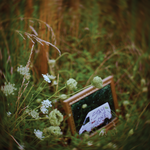
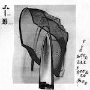

Music Reviews
-

Tigers Jaw I Won't Care How You Remember Me
On their sixth LP, the Scranton, Pennsylvania quartet continues to chug along with admirably dependable songs.
Ethan Gordon reviews... -

Julien Baker Little Oblivions
After 2017's spare, confessional Turn Out the Lights, the Nashville singer-songwriter's third LP once again offers a window into her personal struggles but with a full band to boot. Just like its predecessor, it's hard yet alluring to hear.
Juan Edgardo Rodríguez reviews... -

The Hold Steady Open Door Policy
On their 8th studio LP, the enduring indie rockers continue to prove that consistency doesn’t mean going stale.
Carlos Thomas reviews... -

Naked Days My Head Hz
On his latest album as My Head Hz, Degnan Smith creates a familiar state of emotional stasis by juxtaposing the domestic details around him with the direct articulation of his thoughts.
Ethan Gordon reviews... -

Wild Pink A Billion Little Lights
Led by frontman Jonathan Ross, the New York City trio's third LP is shaped by his unvarnished ruminations over classic Americana signifiers that sound uniform in tempo and tone.
Juan Edgardo Rodríguez likes this familiar tune... -

Miss Grit Impostor
Miss Grit arrives with a fully-formed musical identity on her new EP, turning anxiety and self-doubt into cathartic, powerful songs.
Joe Marvilli buys the banter… -

Calyx Stay Gone
The Pittsburgh-based punk trio go from hardcore to harmonious on their full-length debut.
Mark Moody reviews... -

Sun June Somewhere
On their airy, atmospheric sophemore album, the Austin, Texas band give us a steady depiction of what it's like to be young and uncertain.
Ethan Gordon reviews... -

The Weather Station Ignorance
On her fifth Weather Station LP, Tamara Lindeman combines universal and personal struggles to produce an album about dealing with relationships and the looming threat of global warming at the same time. [Believe the Hype]
Ethan Gordon reviews... -

The Body I’ve Seen All I Need To See
Always well into the red, The Body ruins your day (and your ears) with I’ve Seen All I Need To See.
Sean Caldwell reviews…